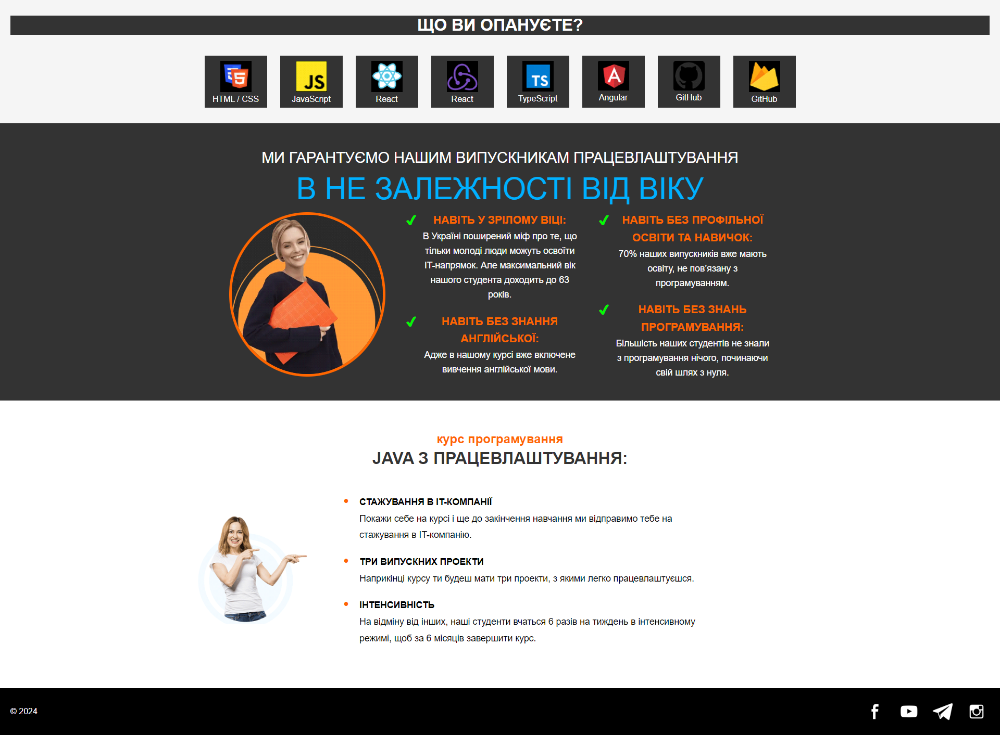

Завдання №3
Для виконання завдання №3 необхідно було створити головну сторінку сайту відповідно до зображення:
Теорія
Flexbox (Flexible Box Layout Model) — це сучасна технологія для створення гнучких і адаптивних макетів у CSS. Вона дозволяє легко вирівнювати елементи, як у рядках, так і у стовпцях, контролювати їх порядок, розміри та поведінку під час зміни розмірів екрану.
Зазвичай виділяють дві основних концепцій Flexbox:
- Контейнер (Flex Container) — це елемент, до якого застосовується властивість display: flex;. Усі безпосередні дочірні елементи такого контейнера стають flex-елементами і автоматично підлаштовуються під поведінку контейнера.
- Flex-елементи (Flex Items) — це дочірні елементи контейнера. Вони можуть бути вирівняні і впорядковані у відповідності до властивостей контейнера та власних flex-властивостей.
Flex Container Властивості:
display: flex | inline-flex - визначає контейнер як flex або inline-flex.flex-direction: row | row-reverse | column | column-reverse - задає напрямок розташування елементів.justify-content: flex-start | flex-end | center | space-between | space-around - вирівнює елементи по головній осі (горизонтальній).align-items: stretch | flex-start | center | flex-end | baseline - вирівнює елементи по поперечній осі (вертикальній).flex-wrap: nowrap | wrap | wrap-reverse - дозволяє елементам переноситися на новий рядок, якщо не вистачає місця.
Flex Items Властивості:
order: числове значення (за замовчуванням 0) - змінює візуальний порядок елементів.flex-grow: числове значення (за замовчуванням 0) - визначає, скільки простору елемент займатиме при розширенні.flex-shrink: числове значення (за замовчуванням 1) - визначає, скільки простору елемент скорочуватиме при обмеженому місці.flex-basis: значення розміру (наприклад, px, %, auto) - задає початковий розмір елемента до розподілу простору.align-self: auto | flex-start | center | flex-end | baseline | stretch - вирівнює окремий елемент уздовж поперечної осі, перевизначаючиalign-itemsконтейнера.